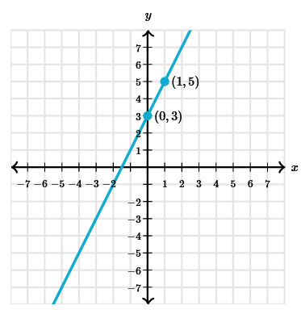
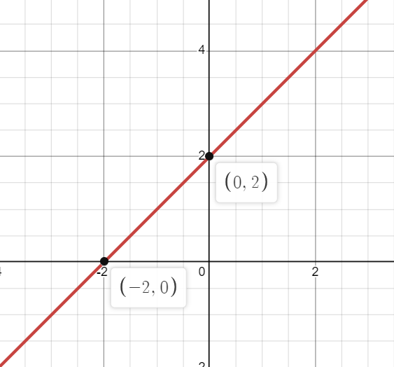
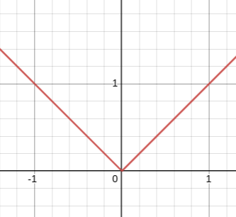
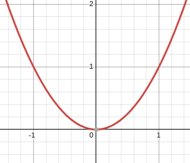

Common Graphs
The most basic graphs, you may see. (Note if using function notation you would replace 'y' with 'f(x)'
- 1) linear graphs
- 1a. slope intercept form
- 1b. point slope form
- 2) other graphs
- 2a. absolute value
- 2b. vertical lines
1a. y = mx + b; where in this graph the m represents the slope.
eg. m = 2; and b = 3
1b. y-y₁=m(x-x₁); where in this graph the m represents the slope again, and (x₁, y₁) is a specific point.
eg. m = 1; x₁ = 3; and y₁ = -1
2a. y = |x|; where the '||' represent the absolute value operation
eg. showing the general parent function for absolute value
2b. y = a and x = a; where a represents represents some constant value
eg. a = 1; red for y=; and black for x=

Quadratic Graphs
The quadratics that you might use in calclus can often different from each other and differ from the base functions, functions you might see will combine all these basic powers of x to create interesting curves.
In calclus it will be importatnt to know how solve these equations but also how to factor, here is an introduction and resources incase you need it.
---> Factoring Quadratics
- 1) Powers of x
- 1a. quadratic
- 1b. cubic
- 1c. root
- 1d. cube root
- 2) Reciprocals of x
- 2a. base reciprocal
- 2b. reciprocal squared
1a. y = x2 ; this is the base form for a quadratic, it's shape is known as a parabola
eg. parent function graphed
to be continued...
Trig. Graphs
- 1) The abrivated functions
- 1a. sine
- 1b. cosine
- 1c. tangent
- 1a. secant
- 1b. cosecant
- 1c. cotangent
- 2) The inverse functions
- 2a. arcsine
- 2b. arccosine
- 2a. arctangent
to be continued...
Polar Graphs
An explaination of polar functions.
Math.Libretexts.org- 1) The abrivated functions
- 1a. cir
- 1b. cosine
- 1c. tangent
- 1a. secant
- 1b. cosecant
- 1c. cotangent
- 2) The inverse functions
- 2a. arcsine
- 2b. arccosine
- 2a. arctangent
to be continued...